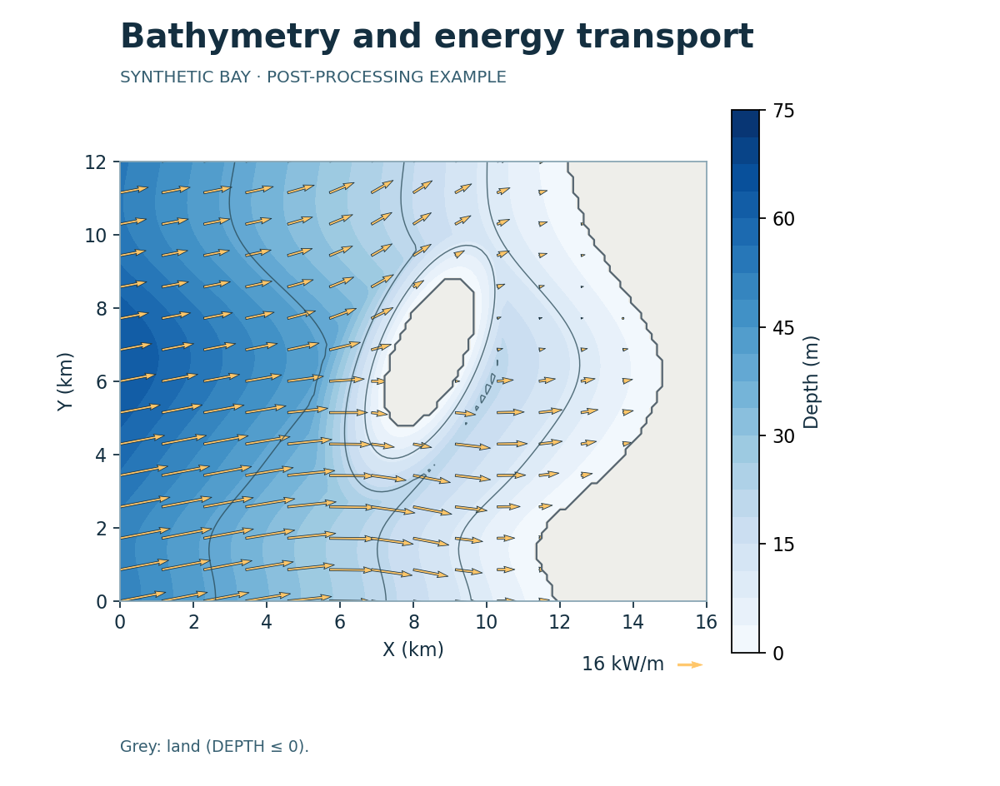

OPEN-SOURCE PYTHON PACKAGE · V0.1
NefisReader
Read Delft3D 4 NEFIS outputs and convert them to NetCDF. Includes the d3dnefis command, a Python API, and an optional MCP server.
INTERACTIVE EXAMPLES
Explore WAVE 2D and FLOW 3D.
Choose a wave field or a velocity layer. NefisReader exported these values from the repository's synthetic examples.
Significant wave height
Loading example…
Synthetic data, not observations or thesis results.
The explorer displays precomputed slices. The installed package reads and converts your own .dat/.def pairs. This page does not accept uploads.
POST-PROCESSING EXAMPLES
From NetCDF to maps.
NefisReader exports the fields. A Python script combines them into maps. Both examples use the same synthetic bay, not a simulation or data from Callao.


Bathymetry and energy flux
Background: DEPTH in metres. Arrows: TRANSP_X and TRANSP_Y in kW/m, shown only over water.

Significant wave height and depth contours
Colours: HSIGN in metres. Lines: depth contours. Grey marks land in the synthetic example.
INSTALLATION
Install the package and read your model outputs.
Linux x86-64, Python 3.9+, and internet access to install dependencies. Download the package and run these commands from your downloads folder. You do not need to install Delft3D.
tar -xzf NefisReader-main.tar.gz
cd NefisReader-main
python3 -m venv .venv
source .venv/bin/activate
bash scripts/install.sh
d3dnefis examples/data
python examples/leer_mallas.py \
examples/data/NETCDF_EXPORT/wavm-demo-2d.nc \
examples/data/NETCDF_EXPORT/trim-demo-3d.ncAlready have a file?
Pass a .dat file or the run folder to d3dnefis. Use --inventory to list variables without converting.
Connect your agent via MCP
The local server lists variables and reads slices from NEFIS or NetCDF files in the allowed folder. Requires Python 3.10+.
MCP guide for Codex and other clientsCREDITS AND SCOPE
Open-source software.
NefisReader is an independent project. It is not an official Deltares product or endorsed by Deltares.
Deltares develops the NEFIS library. Its source code, notices and build instructions are distributed separately in the repository. Examples are synthetic and contain no thesis data.
The project's own code uses the MIT licence. The Deltares NEFIS library retains its own notices and licence.
Was NefisReader useful?
Sign in on GitHub and click Star to bookmark the repository and support the project.
If you'd like to support the project with a voluntary donation, get in touch!
This opens a public GitHub issue. Do not share payment details there.